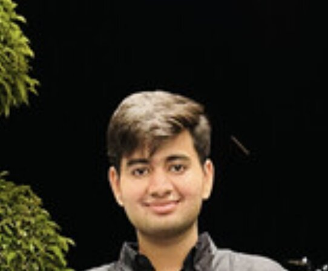

VK'">MS Computer Science, University of Colorado Boulder
Email: vishwasvkothari@gmail.com
I am a computer science master's student at the University of Colorado Boulder, working on machine learning systems that are evaluated as carefully as they are built. My interests are in model evaluation, document intelligence, trustworthy AI, optimizer behavior, and scientific data systems.
Before CU Boulder, I worked at ISRO's Space Applications Centre on ocean-color retrieval from satellite reflectance. I developed retrieval models using the Levenberg-Marquardt optimization method to estimate chlorophyll and related water properties, then validated the outputs against 105 measured samples.
I like projects where the central question is not only whether a model performs well, but where it fails, why it fails, and what evidence should make us trust it.
Projects and Research 2026FinAgent-Eval: evaluation for financial document question answering. I curated 397 QA pairs from ten sources and compared five vision-language models on a single free GPU. The best model achieved 4.3x ANLS over the strongest document-AI baseline, but failed sharply on numerical reasoning, with 0.11 ANLS and 0/6 paraphrase consistency. Includes bootstrap confidence intervals, a seven-label failure taxonomy, pytest coverage, and a Streamlit dashboard. CodeWeb
Implicit Bias of Adam vs. SGD. I tested recent theory on optimizer implicit bias, verifying empirical solutions against exact convex-program references across five seeds. The study measured how optimizer choice affected shortcut reliance and out-of-distribution degradation on a spurious-correlation benchmark. Empirical and exact solutions reached 0.99 cosine similarity. Code
XAI Credit Lens. A responsible-ML pipeline for credit-risk modeling with fairness auditing, SHAP and LIME explanations, DiCE counterfactuals, Optuna tuning, and Streamlit reporting. The model reached 0.782 test AUC with zero fairness violations across four protected attributes. Code
Document VQA and Transfer. I benchmarked four vision-language models on dense financial documents, built and hand-verified a 307-pair dataset, and compared LoRA adaptation strategies. A small in-domain run improved ANLS by 22 percent, while generic fine-tuning reduced it by 39 percent. Code
ExperienceResearch Intern, Space Applications Centre, ISRO. Ahmedabad, India. January to July 2025.
Worked on ocean-color retrieval from satellite reflectance, with a focus on turning raw satellite observations into validated bio-optical estimates. The work combined scientific data engineering, numerical optimization, inter-sensor comparison, and validation against measured samples.
- Built Python preprocessing pipelines with SciPy, NumPy, xarray, and SNAP for reprojection, resampling, and pixel-level NetCDF merging.
- Developed Levenberg-Marquardt retrieval models for bio-optical parameters, reaching reflectance R2 = 0.987 across five wavelengths and chlorophyll-a R2 = 0.879 in log-space on 105 validated samples.
- Designed an inter-sensor colocation workflow to compare chlorophyll-a products across MODIS-Aqua and OCM, then documented the methodology and findings in a 60+ page technical report.
- MS, Computer Science, University of Colorado Boulder. 2025 to 2027. GPA 3.74 / 4.0.
- B.Tech, Information Technology, Vellore Institute of Technology. 2021 to 2025. GPA 3.4 / 4.0.
- AWS Certified Cloud Practitioner. Score: 970 / 1000.
- Springer book chapter, 2025: Kothari, V., and Krishwanth, B. Ethical AI for countering violence against women. DOI
- Elsevier reviewer for Public Health and Social Sciences & Humanities Open. Reviewing since 2026.
- LanguagesPython, SQL, Java, C / C++, JavaScript
- ML / DLPyTorch, scikit-learn, XGBoost, LightGBM, Hugging Face Transformers, LoRA / PEFT
- EvaluationBootstrap confidence intervals, LLM evaluation, failure taxonomies, pytest, Optuna
- XAI / FairnessSHAP, LIME, DiCE, fairness auditing, counterfactual explanations
- DataNumPy, Pandas, SciPy, xarray, NetCDF, OpenCV, MySQL, MongoDB
- ToolingGit, Linux, AWS, Streamlit, Gradio
Email: vishwasvkothari@gmail.com
Resume: resume_vk.pdf
LinkedIn: linkedin.com/in/vishwas-kothari
GitHub: github.com/vishwas182002